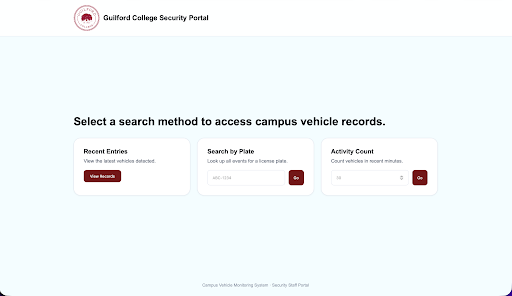
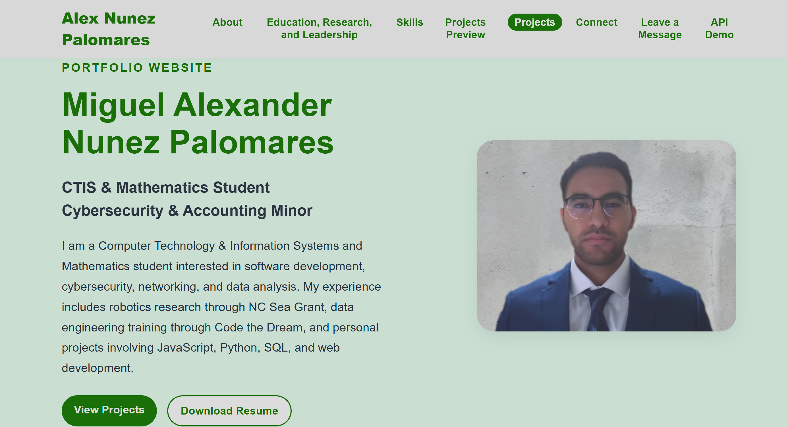
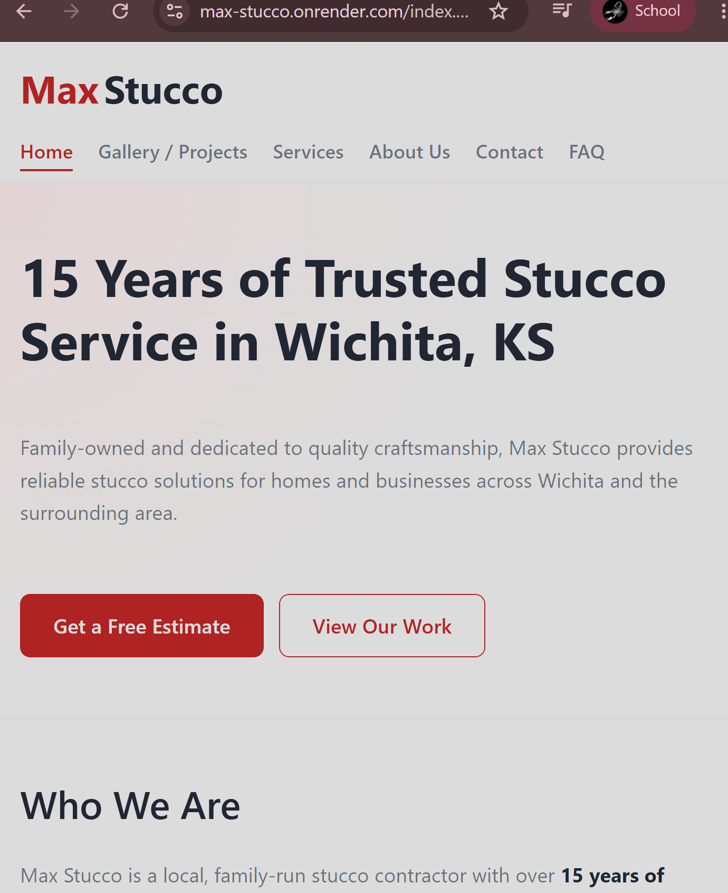
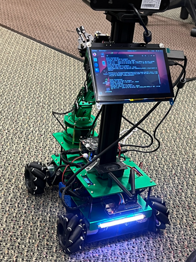
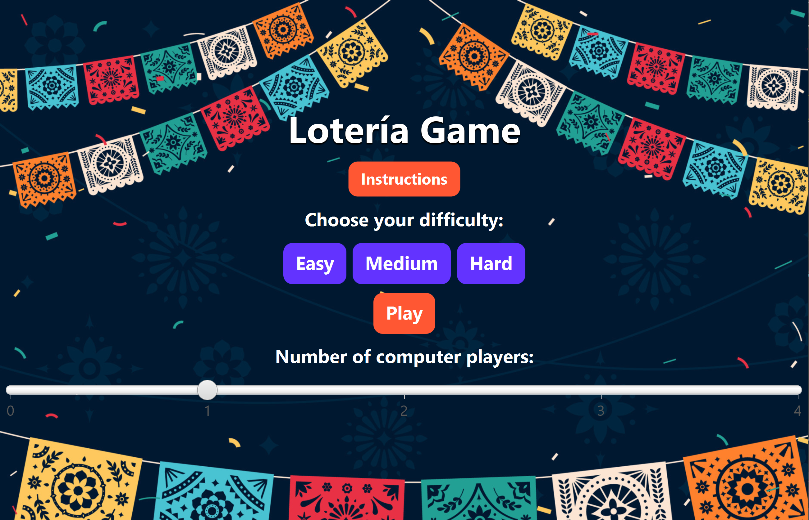
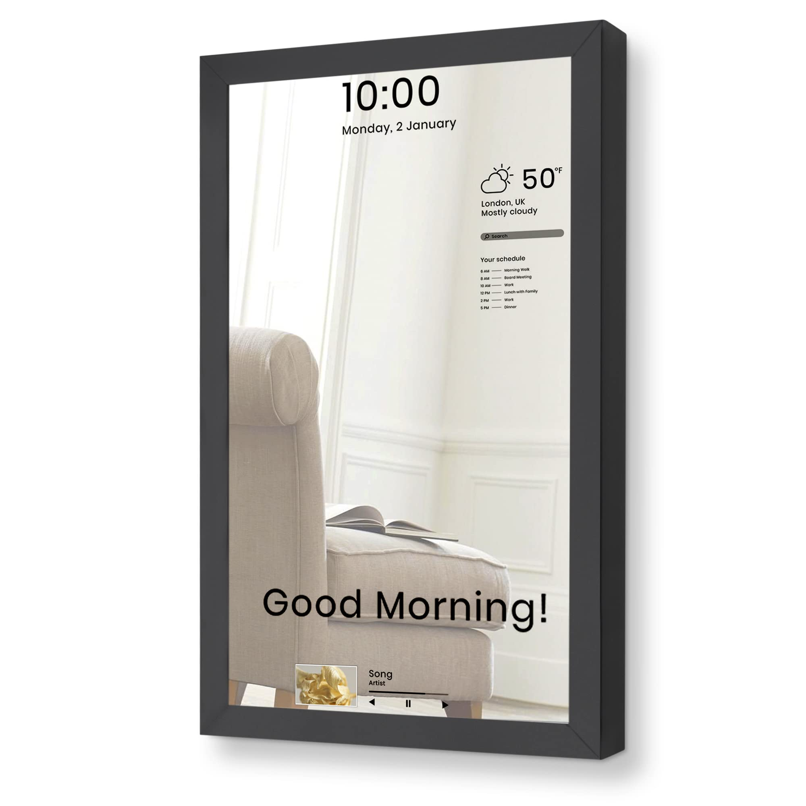

February 2026 – April 2026
Edge-AI Campus Vehicle & Activity Monitoring System
Developed an Edge-AI monitoring system capable of detecting, classifying, and logging campus vehicle activity using computer vision and embedded systems.
What I Built
Designed a distributed system using a Raspberry Pi edge device, FastAPI backend, AI object detection pipeline, event logging, REST API communication, live monitoring, and dashboard integration.
Skills Used
Built an operational prototype capable of real-time vehicle detection, event storage, image capture, and backend dashboard communication.

March 2026 – June 2026
Personal Portfolio Website
Develop a professional online portfolio to showcase technical projects and programming skills to potential employers and collaborators.
What I Built
Designed and implemented a responsive, multi-page portfolio website using HTML, CSS, and JavaScript. The site features a clean layout, interactive project showcases, and a contact form for networking opportunities.
Skills Used

November 2025 – December 2025
MAX Stucco Business Website
Developed and launched a commercial website to improve digital presence and client acquisition for a real business.
What I Built
Built structured service pages, gallery features, and contact form functionality using responsive design principles.
Skills Used

January 2025 – July 2025
NC SeaGrant Coastal Robotics Project
Develop an autonomous robot to detect and remove plastic waste from coastal environments.
What I Built
Designed navigation strategies for diverse terrains; trained AI models for object detection and classification; collaborated with faculty advisor on testing and design.
Skills Used
Built and trained a robotic system capable of distinguishing debris from natural elements; contributed to research on applying AI in environmental sustainability.

Spring 2025
Lotería Game
Created an interactive digital version of the traditional Mexican game Lotería as a Java final project.
What I Built
Designed custom classes for cards, decks, players, and winning conditions. Implemented a JavaFX GUI with Start, Game, Instructions, and Win screens, plus difficulty settings and animations.
Skills Used

October 2024 – November 2024
Smart Magic Mirror Project
Built a multifunctional smart mirror integrating AI assistance and modern applications for everyday use.
What I Built
Designed the system on Raspberry Pi, implemented modules for real-time information display, and integrated voice-activated Google Assistant.
Skills Used
Delivered a fully functional smart mirror with Spotify, web browsing, weather, and news integration; implemented auto-update and power features for user convenience.